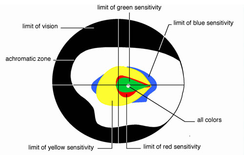
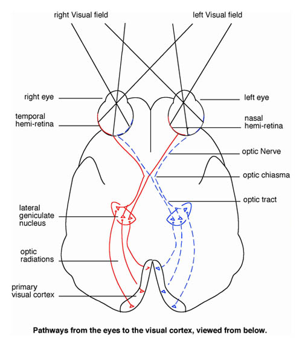

We designed the "exoptic fields" video based on aspects of visual optics, neurophysiology, and visual psychology. Optics and neurophysiology involve the brightness, colors, orientation, and the motion of visual stimuli to capture the attention of the viewer. Visual perception also involves the active participation of the perceiver, her active exploration of the environment, her psychology. This last fact makes addressing visual psychology the key to successful visual deflection.
The following are some of the principles of human vision that we employed to make the "exoptic fields" video viewers' deflect attention from the screen.
Vision is the primary sensory function in primates and humans. Our visual perception of the world depends on complex patterns of stimulation. There are three main areas of scientific research dedicated to understanding vision:
First, visual optics, the mechanics of how the eye receives light and the nature of visual stimuli.
Second, visual neurophysiology, or how the brain interprets visual inputs to construct a unified visual image.
And finally, visual attention, an area of psychology that describes both the properties of the image and the expectations and goals of the observer that determine the attention given to a perceptual episode.
The eye and its lens catch and focus light onto the receptor cells of the back of the eye, the retina. The perception of colors starts at the very center of the retina, in the fovea. The different frequencies and intensities of light captured at a particular point of the retina are transformed into neuronal signals by the photoreceptors. They are of two types, the cones and the rods, but only the cones mediate diurnal and high acuity color vision. The cones alone occupy the center of the retina. The cones and rods are made up of different photopigments. These are red, green or blue, according to the light frequency they can capture. Their repartition in the retina is well-described. The red and green cones are localized in the center, with around the less numerous blue cones organized into a ring.
diagram 1
Color regions of the right eye. Color sensitivity can be determined by means of an instrument called a perimeter, which can present colored spots of light to peripheral regions of the retina. All colors can be detected in the central area of the retina.from "An Introduction: Visual Perception" by Nicholas J. Wade
These findings imply that the light frequency that reflects the object observed will influence the way we need to focus on this object. Thus, the "exoptic fields" video has adapted its color scheme, blue and yellowish tones, to target the most peripheral photoreceptors.
Once the light pattern strikes the retina, visual signals pass through the axons of the retinal ganglion cells that form the optic nerve, to neurons that project directly into the cortical visual areas. At that point the visual inputs are separated into different components that are analyzed locally in specialized regions of the cortex. The identification of an object as well as its spatial position will derive from this analysis (Zeki, 2000).
diagram 2
Pathways from the eyes to the visual cortext, viewed from below.
The visual system is most sensitive to well contrasted colors, sharply defined contours and oriented edges (Wade, 1991). To lure the eyes away from the center of interest, we based our approach on opposite characteristics, i.e. smooth contours, blurred lines, undefined shapes forming an horizontal undulating surface that move toward the edges of the screen.
Advertisers have extensively used the fact that fast and sudden motions of the object(s) of interest converging to the center of the TV capture the movements of our eyes and our undivided attention (Hillstrom and Yantis, 1994; Egeth and Yantis, 1997; Corbetta and Shulman, 1998). The "exoptic fields" video has therefore refined all movement to create very slowly undulating contours and colors that withdraw to the edges of the screen.
The overall picture is finally created by combining the operations of the different specialized regions into a unified visual image. If how the brain does this is still not understood, the processes of consciousness and memory are thought to play an essential role (Hoffman, 2000).
The brick wall in the "exoptic field" acts to neutralize one’s visual psychology, ones reflections on: "What will happen next." Meanings commonly associated with a brick wall will ideally lead quickly to dis-interest on the part of the observer across many human cultures.
Corbetta, M., and Shulman, G. L.., Human cortical mechanism of visual attention during orienting and search, Phil. Trans. R. Soc. Lond. B, 1998, 353:1353-1362.
Egeth, H. E., and Yantis S., Visual attention: Control, representation, and time course, Ann. Rev. Psychol., 1997, 48:269-97.
Hilltrom A. P., and Yantis S., Visual perception and attentionnal capture, Percept. Psychophys., 1994, 55(4):399-411.
Hoffman, D. D., Visual intelligence: How we create what we see. Norton, 2000.
Wade, N., An introduction: visual Perception, Michael Swanston, N.Y. & London, Routledge, 1991.
Zeki, S., An exploration of art and the brain, Oxford University Press, 2000.